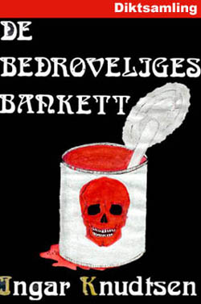

Introduksjon ved Ingar Knudtsen
Dikteren i skyggene
I likhet med så mange har også jeg skrevet dikt. Men ulikt mange hadde jeg svært alvorlige hensikter med dem fra første stund. Min interesse for lyrikk er gammel, og det gjelder da særlig arbeiderlyrikere som Hans Børli, Rudolf Nilsen, Joe Hill, Ellisif Wessel, og også Jens Bjørneboe, Nordahl Grieg og sist men slett ikke minst Jacob Sande.
Men på sekstitallet da jeg begynte å skrive trodde vi som all annen ungdom til alle tider at nå, NÅ! Var et ny tid virkelig i emning. Nå skulle revolusjonen komme, den som skulle forandre på alt og legge alt det gamle på historias skraphaug…
“The Times they are a Changing” sang Bob Dylan med glød og overbevisning, og vi var lette å overbevise, mange av oss.
“Når Peter Krapotkins Gjensidig hjelp og Reichs Orgasmens funksjon blir pensum i grunnskolen, da har revolusjonen begynt” skrev jeg i et dikt den gangen. Kanskje trodde jeg til og med på at det kunne skje?
Det første diktet jeg hadde på trykk var i Aura Avis på Sunndalsøra i 1965, men det var i den såkalte “undergrunnspressa” diktene mine florerte som verst. Blant annet i den forsøksgymnasbaserte Dikt & Datt, og i Gateavisa, Folkebladet, Revolt, Vannbæreren, etc.
Avisa Vår Mening fikk også pent ta imot noen dikt, og der hadde jeg jo lett spill med redaktøren (meg selv).
Det var kanskje ikke så rart at ideen om å lage ei diktsamling dukket opp etterhvert. Det skulle bli ei merkelig historie, det! Dikt & Datt-redaksjonen var de første som prøvde seg, og prosessen var kommet et godt stykke på vei da de fikk økonomiske problemer. Aschehoug fikk et manus, men jeg skjønte jo i grunnen på forhånd at det forsøket var dødfødt. Det fortalte deres øvrige diktutgivelser meg ganske så tydelig.
Det neste seriøse forsøket mitt kom først ei god stund etterpå, og denne gangen var det Rune forlag i Trondheim jeg prøvde, et forlag som jo hadde gitt ut en roman og to novellesamlinger av meg på det tidspunktet. Tittelen skulle være De bedrøveliges bankett, og den ble faktisk antatt og min datter Vanja ble bedt om å lage forsida, noe hun gjorde. Det hele kom så langt som til korrekturen, men så slo uflaksen til igjen og forlaget innskrenket brått sin virksomhet og ble lagt ned kort tid senere.
Lyrikkutgivelser i bokform fra min side er dermed begrenset til deltakelse i en antologi med tittelen Hverandre.
Siden har jeg ikke prøvd. Noen av diktene mine flyr likevel rundt om i diverse korridorer har jeg inntrykk av. Enkelte dikt er blitt tonesatt, og noen er blitt brukt på andre måter også. Fritt fram, sier nå jeg, så lenge det ikke dreier seg om noen kommersiell utnyttelse av betydning! Da vil jeg nok helst ha et stykke av kaka.
De siste åra har diktskrivinga ofte skjedd når jeg har vært på bunnen psykisk, og de nyere diktene bærer naturlig nok sterkt preg av det.
En venn av meg har brukt ei setning i ett av diktene mine som et slags sammendrag over hva diktene mine handler om nå for tida:
“Operasjonen var vellykket, pasienten er død”
(Fra diktet “Underbevissthet”, 1977.)
Hvis det kommer en smule positiv respons så kanskje jeg legger ut flere dikt etterhvert; jeg har nok å ta av!

Omslag tegnet av Vanja KnudtsenDet fortapte folk
En forreven kyst
stiger opp av havet
over frostbitt jord
kastes vind og vær
her bor de som
har arvet landet
fra småkårsfolk
som sto havet nær
Men noen er det
som uten vilje
driver likegyldig
med tidens strøm
de ser mot havet
men det er dem fremmed
de håner vilje
og frihetsdrøm
et folk som tilsviner
moderarven
som uten medynk
ser liv forgå
med kalde ansikt
i fåfengt streben
ser de alt gå under
uten å forstå
Og havet bryter
som salte tårer
mot furet svaberg
på værbitt strand
jeg vrir meg angstfylt
i marerittet
der et giftig hav
slår mot livløst land
Egoisten
(tilegnet Max Stirner)
Tommelen ned
for egoisten
som satte seg
foran oss
Hent pisken
tortur!
de glødende jern
repet
den Hellige Masse
Staten
Vi
krever det hodet
som tenkte en tanke
som skrev et ord
uten godkjenning
uten autorisasjon
utenfor de opptrukne kjørefelt
giften venter
galgen
døden
orgasmen
EPILOG
Døden?
Så fort?
våre liv
fikk mening en stund
i sladderen
under jakta
voldtekten
under torturen
i dødsøyeblikket
Gud!
gi oss en ny egoist
å forfølge
Kreasjon
Et underlig ord
kreasjon
et barn født av
tanker
et barn skapt i glede
og så smerte
akkurat som andre barn
men ingen blir politianmeldt
ingen blir straffet
for å drepe mitt
barn
Lynx
Kjenner stanken
den river i nesen
vil flykte
men står helt stille
og ser dyret komme
vaggende, stampende
hvordan kan noe levende
være så stygt
stanken av unatur
av hud som ikke er hud
av brann og aske
av øde uten ende
stanken av menneske
Kan føle angsten
min egen
og menneskets
rase mot hverandre
og rive i hverandres struper
falsk menneskeangst
som varsler at snart kommer
de alle i flokk
mange, mange, mange
trampende, haukende
med stemmer som stein mot stein
og forræderdyras glefs og glam
torden i skogen
død på lang avstand
ufattelig tordendød
skarpt som trær som brekker
gaupeangst
gaupedød
i stank av menneske
uten ende
og vi gråter alle
tårer av hat
stanken av å eie
kontrollere
dirigere
justere
forvalte
stanken av mord
stanken av mordere
lukta av lik
av blod
av død
av oss
Provokasjon i Svart
…og mens spekulantene ordner sine
tusener av slips foran tusener av speil
åpner flasker med de fineste etiketter
mens praten går om Profitt og Børs og Aksjer
og pengetrærne vokser inn i himmelen
til klagesangen over lønnsoppgjørets grådighet
lader jeg med omhu pistolene
og imens byråkratene, pampene og profittørene
autoritære medborgere av alle slag
valser rundt i sin feite fred
og stoler på at politiet, militæret, religionen
og hele skiten
skal hegne om Autoriteten
fra evighet til evighet
ordner jeg bombenes tennmekanismer
og mens alt stinker fred og fordragelighet
mens alle de velprogrammerte borgerne
konsumerer TVkanalenes enfoldige mangfold
og historias hjul tilsynelatende ubønnhørlig
fører hierarkienes tid videre
går jeg ut i gata…
*…jeg våkner forvirret
i rommets gardinmørke gråhet
og vet ikke om det var et mareritt
en absurd fantasi
et ekko av TV-serienes
uendelige konspirasjoner
og gårnattas siste grufulle nyhetssending
- eller virkelig tida som igjen skiftet
i natt
og forlot meg skibbrudden
i enda ei ny sannhet
jeg ikke forstår*
Røde timer
I de røde timene
når inspirasjonens sanseløse orgasme
er en vag drøm og et halvglemt minne
da byr deg opp til dans
den blekeste kvinnen
med nattmørke øyne
hun byr deg en drikk av død
og mørke og jord
I de røde timene
når du famler halvblind
etter noe som du tror du en gang eide
men bare finner halve seire
og doble nederlag
da tviler du endatil på henne
den bleke med nattøynene
tviler
på mørket og befrielsen og døden
i fall nederlaget er større
enn dem alle tre
og større enn henne
I de røde timene
og snart er alle timer røde
Spray
Øyne
uten naturens glans
vinduer mot neondrømmen
under tunge vipper
ansikter
masker
sjelløst påtrengende
i fargekartets nyanser
stadig nyoppusset
kropp
flådd naken og hårløs
antiseptisk deodorert
profittens marked
sjølhatets bolig
angstens loft
og skrekkens kjeller
hjerne
ekkoene av reklamens voldtekt
evig mumlende
mindreverdig
ufullkommen
rynker-flass-fedme-kvalmende-henge-stygg
munn
karikert modellmunn
som gjentar
mindreverdig
ufullkommen…
og hvert ord
setter tekst
til tonene fra
kassaapparatenes orkester
og profittørene jublende
kor
Forbrytelse og straff
Lytt
dråpene faller
fra begeret som flyter over
de hogde fingrene av
som fulgte impulsen
men hodet ble spart
Tatt i betraktning
delinkventens vandel:
gro nye hender
bak trygge murer
og krev disiplin
øyne på hver finger
gjort for alltid
oppmerksom på øksen
Øksen
justisens tjener
som hogger vekk ulydigheten
de lovløse fingrene
ti anarkister
ligger i bøtten
Men bak de rettferdige miner
ser De alt fram til
neste forseelse -
Et hode på et fat
er bedre enn ti fingrer i ei bøtte
Gaia
Stillheten er attråverdig
når naboenes unger hyler
når bilene flerrer forbi
når det alltid er nyheter
når trommerytmene trenger inn
som vibrerende sjokk
Stillheten er attråverdig
men når bråket stilner
blir klokketikkene
så merkelig sterke
sterke som trommer
blir vindsuset brysomt
som en begynnende orkan
blir tankene til rop
Pusten din går tungt
alt for tungt
og jeg er livredd for
en enda djupere stillhet.
Ventetid
Dersom du en dag blir stilt spørsmålet:
“Hva bruker du
dine våkne netter
og de søvntunge dager til?”
Hvis noen spør
og du for skams skyld
synes du må lete fram et svar
så vil du først finne det
i det innerste låste skapet
i den mørkeste kroken i hjernelabyrinten
Og det banale svaret lyder slik:
“Jeg venter på at det skal skje
et mirakel”
Katastrofe på rim
Rosene var røde
fiolene var blå
druene var søte
du var likeså
Rosene er døde
fioler må forgå
du har surnet kraftig
jeg har likeså
Natta er djup
Natta er djup
den er svanger med mørke
opprevne skyer
fra havhorisont
la mørket få komme
mysterier leve
vreng hjerte åpent
mot en hylende vind
det nattstemmen hvisker
skal tanken besvare
til skriket tar frihet
i månesekund
hutrende kald
med forundret tomhet
noe forlot deg –
hjem
du går hjem
Og du sitter ved ruten
Med uro i sinnet
Lyn gjenom regnet
- det som ble sådd
var det kanskje et frø?
Natta er djup
den er svanger med løfter
opprevne skyer
i ditt sinns horisont
Underbevissthet
Hvor gikk du hen
drøm
det ble så stille
da du var borte
forelsket i tanken på
dine løfter
lot jeg meg vettløst
beruse
uten å innse
at dine ord og bilder
bare var
min ukjente
underbevissthet
som uten mitt samtykke
hadde satt seg fore
å redde stumpene
hvor gikk du hen
drøm
operasjonen var vellykket
pasienten er død